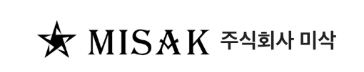
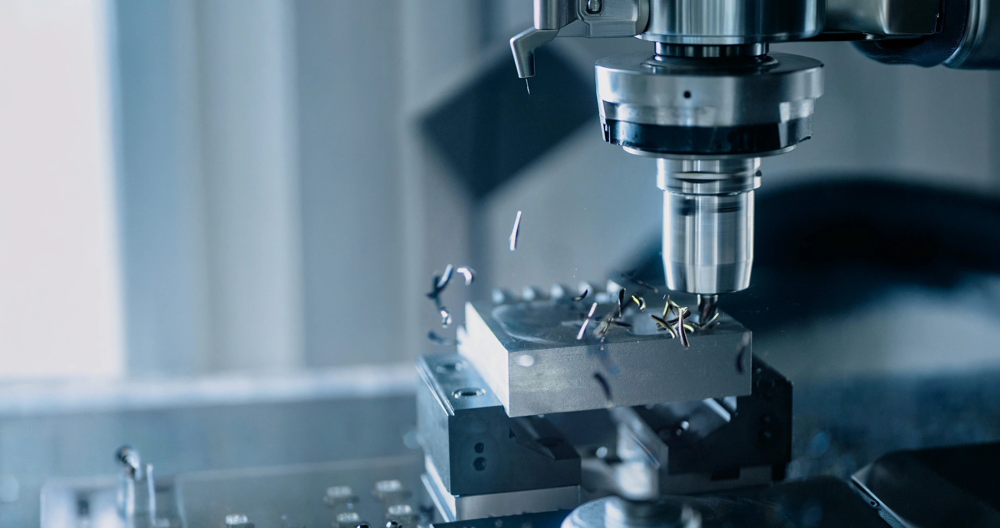
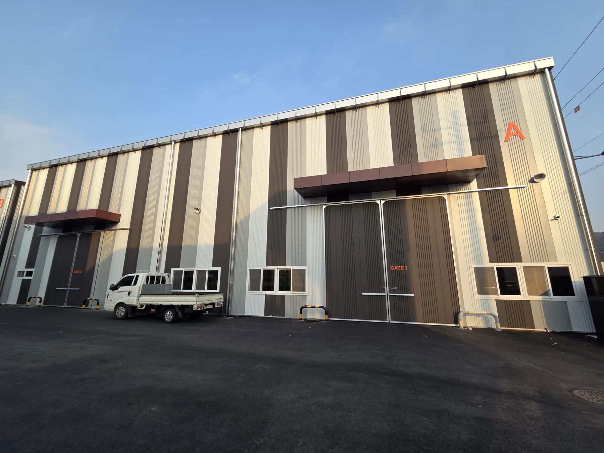
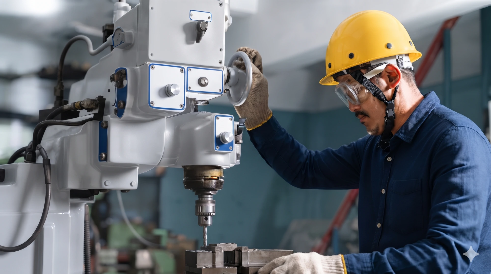
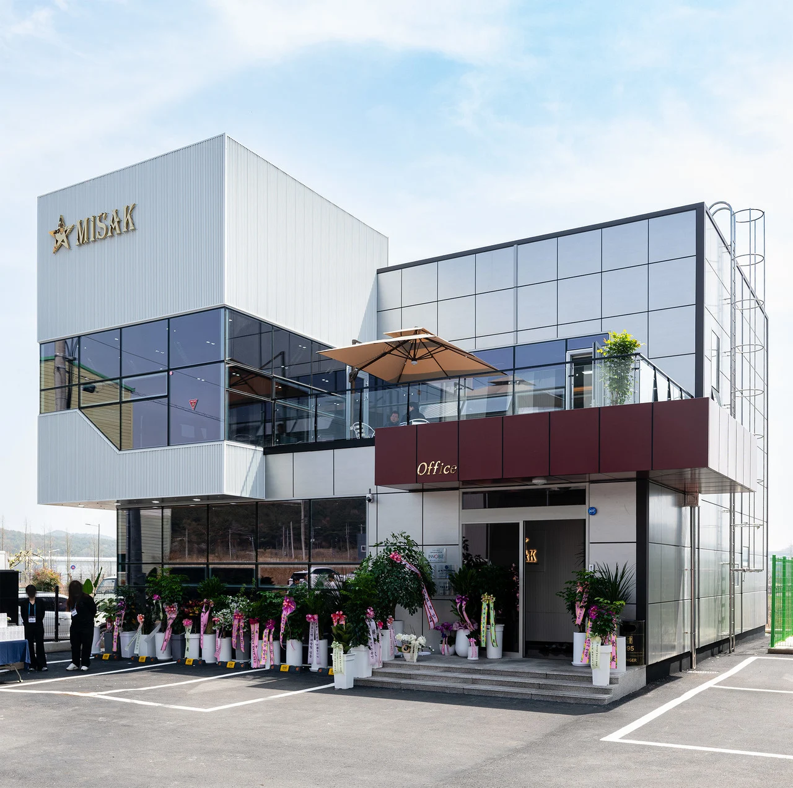

01 / ELECTRONICS
Electronic Parts Die
전자부품 금형제작 및 부품가공


PRECISION · QUALITY · TECHNOLOGY
설계부터 가공, 조립과 TRY-OUT까지.
미삭의 기술로 고객의 제조 경쟁력을 완성합니다.
COMPANY OVERVIEW
미삭은 금형 제작과 금형 부품 가공 분야의 경험을 바탕으로
고객의 요구에 맞는 제조 솔루션을 제공합니다.

전자·자동차·태양광 분야의 금형과 정밀 부품을 제작합니다. 소형부터 대형까지 다양한 가공 설비를 활용하고, 설계·가공·조립·품질 관리가 연결되는 생산 체계를 갖추고 있습니다.
프로젝트마다 다른 조건을 세심하게 살피고, 공정 간 유기적인 대응으로 고객의 생산을 지원합니다.
ABOUT MISAK
전자·자동차·태양광 분야의 금형과 부품 가공.
미삭은 공정을 연결하는 기술로 제조의 완성도를 높입니다.

BUSINESS AREAS
다양한 산업의 금형과 부품 가공.
제품 특성과 요구에 맞춰 유연하게 대응합니다.
전자부품 금형제작 및 부품가공
자동차부품 금형제작 및 부품가공
태양광부품 금형제작 및 부품가공
QUALITY & CERTIFICATION
품질경영시스템
환경경영시스템
안전보건경영시스템
